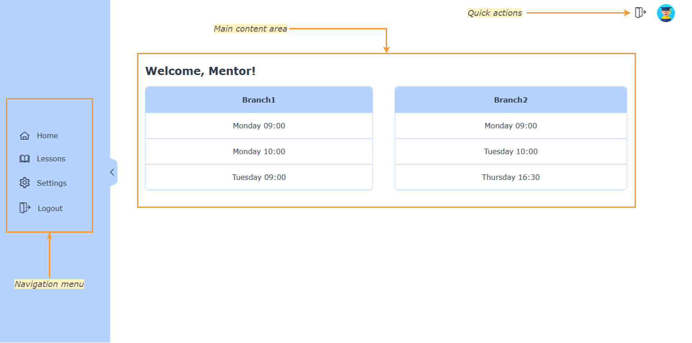
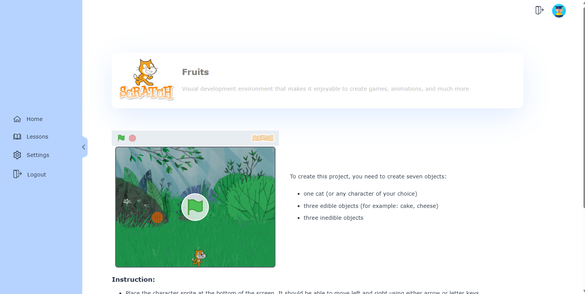

When you log in to the system, you will see the following screen:

Home screen is a page where you can track lessons, but we are open to hear what you will want to see on the home screen after trying the system in work.
On the left side of the screen, you will see the navigation bar. Here you can access all the features of the system.
On the right top corder, there is a quick actions bar with "Log out" and "Home" links.
Students and groups
Groups are used to organize students. When beginning a lesson, open a current group by clicking on it on the main screen
Tracking attendance
Attendance is checked and tracked by mentors.
There are three attendance statuses: present (red), absent (green) and unchecked (none).
Attendance of students is loaded by week. You can use arrows around the date to navigate through attendance history.
To change attendance status, click on the cell corresponding to the student and date, and then press "Save".
Attendances are not saved automatically, pressing "Save" is mandatory for each week.
Tracking student progress
You can assign a new lesson to a student when they are finished with their previous one. To do it, follow the steps:
Click on the edit icon next to student's name
Choose student's level and lesson
Click "Save"
Then ask a student to reload the page, and they will see a renewed document.
Levels and lessons
Levels and lessons are used to organize the learning process. Each student has a level and a lesson assigned to them.
You can look at each lesson individually by clicking on "Lessons" link in the navigation menu.
Here you can see all the lessons; to see the content of a lesson click on it's name and you will be redirected to the following view:

Student sees the lesson content the exact same way
Profile settings
To change your profile settings, click on the "Settings" link in the navigation bar. You will see the following screen:
Here you can change your password and profile picture. It is not possible to change any other personal information
 Attendances are not saved automatically, pressing "Save" is mandatory for each week.
Attendances are not saved automatically, pressing "Save" is mandatory for each week.